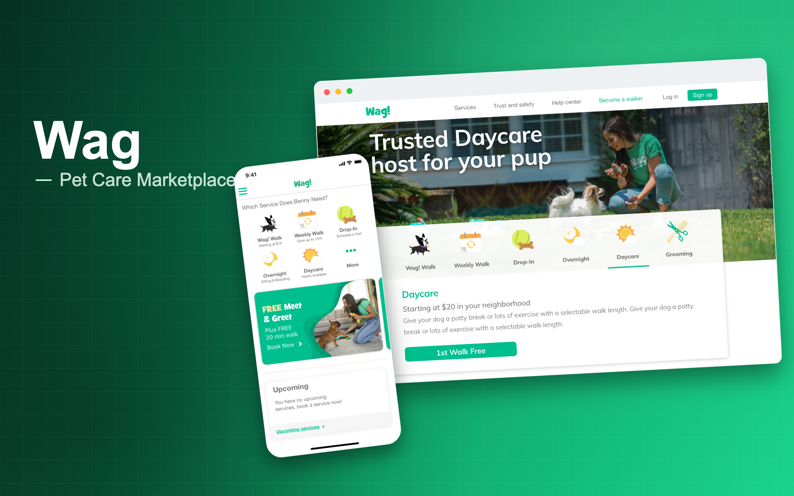

Consumer Marketplace · Pet Care · Product Design
Wag
Pet care marketplace helping pet owners connect with trusted caregivers for walking, boarding, daycare, training, and everyday pet services.
Introduction
I worked on Wag across mobile and web product experiences, focusing on service discovery, navigation, and booking flows for pet care services.
The work focused on improving visibility and usability after Wag launched new services like daycare and drop-off, helping users better understand available care options across mobile and desktop.
Case study in progress
This page highlights selected Wag work across mobile app redesign, service discovery, navigation, booking flows, and cross-platform product patterns.
Because parts of the work were collaborative, this case study focuses on the product areas I contributed to, the user experience problems, and the interface patterns I helped shape.
Overview
After launching new services such as daycare and drop-off, Wag saw lower adoption even though the services were live. Users were not engaging because the services were difficult to find in the app.
I was brought in to redesign the mobile experience across iOS and Android, focusing on improving visibility, navigation, and overall usability. As the work evolved, the approach extended to desktop to create a more consistent experience and improve service discoverability across platforms.
Situation
Challenge
Increase visibility of new services without disrupting existing user behavior or booking patterns.
Make services easier to find, compare, and understand. Improve discovery across mobile while extending patterns to desktop for consistency.
Problem
Users did not realize new services were available.
Returning users stayed within familiar flows.
The issue was visibility, not demand.
Role
Solution and structure
Redesigned the service discovery experience so care options were easier to find and understand.
Clearer homepage structure
Surfaced Wag’s core services and newer offerings in a structure users could quickly scan.
Improved navigation
Made it easier for users to move between services and explore care options.
Cross-platform consistency
Extended mobile patterns to desktop to create a more consistent experience across platforms.
Key product areas
Mobile homepage redesign
Improved hierarchy and service visibility so users could quickly see available care options.
Service discovery
Surfaced services like daycare and drop-off more clearly within the main experience.
Navigation improvements
Redesigned navigation patterns to support easier exploration across services.
Booking entry points
Made it easier for users to move from discovery into booking-related actions.
Desktop consistency
Extended design patterns to desktop so the experience felt more connected across platforms.
Design decisions
Visibility before persuasion
The main issue was not convincing users to want the services. It was making sure they knew the services existed.
Respect existing behavior
Returning users already had familiar flows, so the redesign needed to improve discovery without creating confusion.
Make services scannable
Pet care options needed to be easy to understand at a glance.
Mobile-first, then cross-platform
The redesign started with mobile and later extended to desktop for consistency.
Keep the experience friendly and direct
The interface needed to feel warm and pet-friendly while still helping users make quick decisions.
Outcome and impact
Designing better discovery for a pet care marketplace
This work focused on helping pet owners find, understand, and move into Wag services more easily across mobile and desktop.